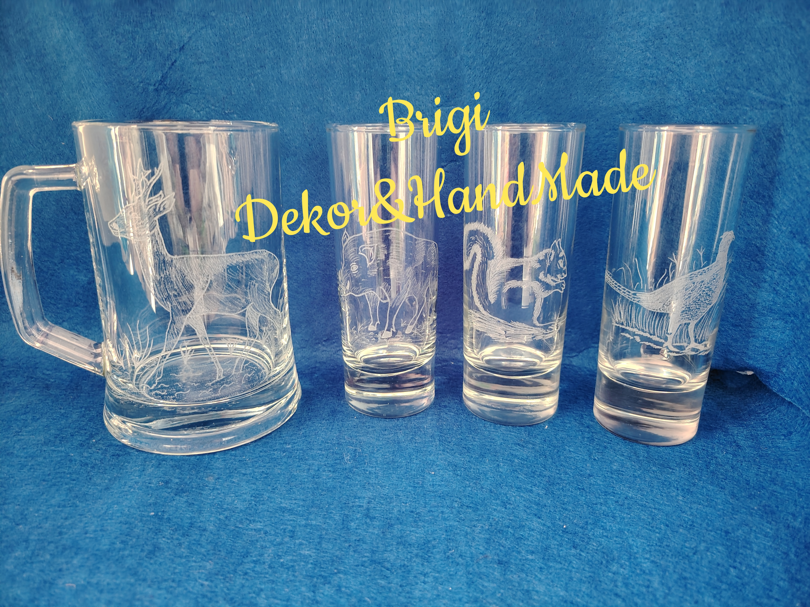
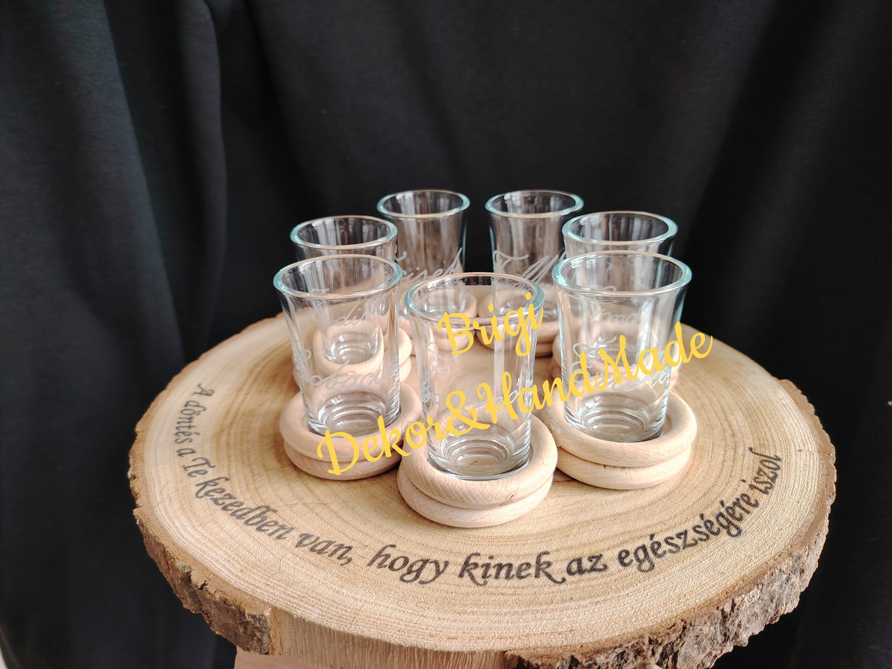
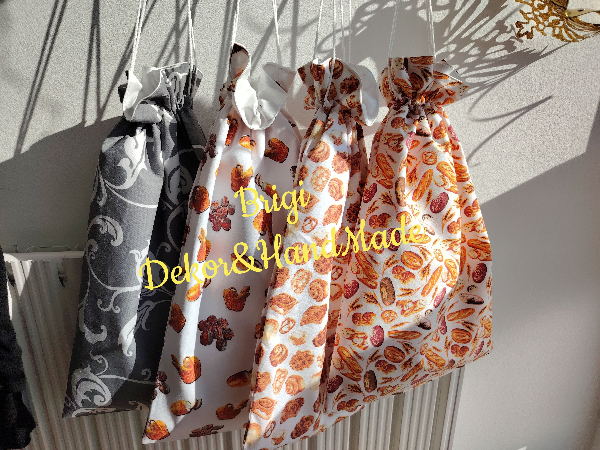
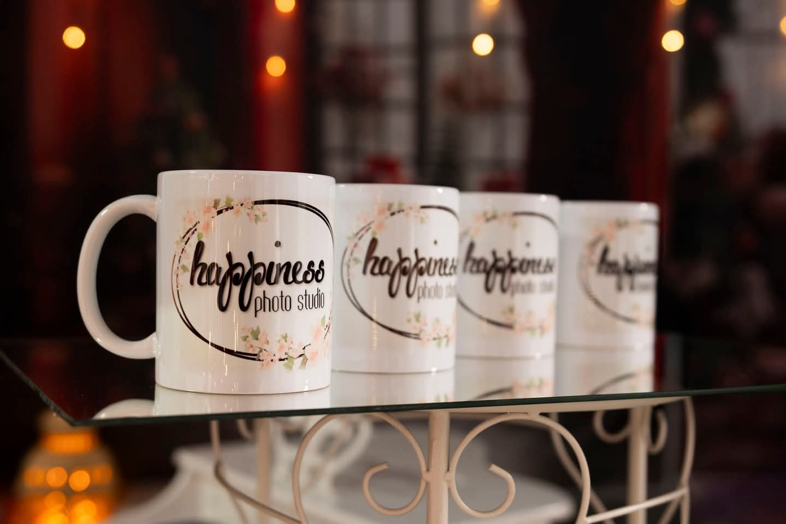
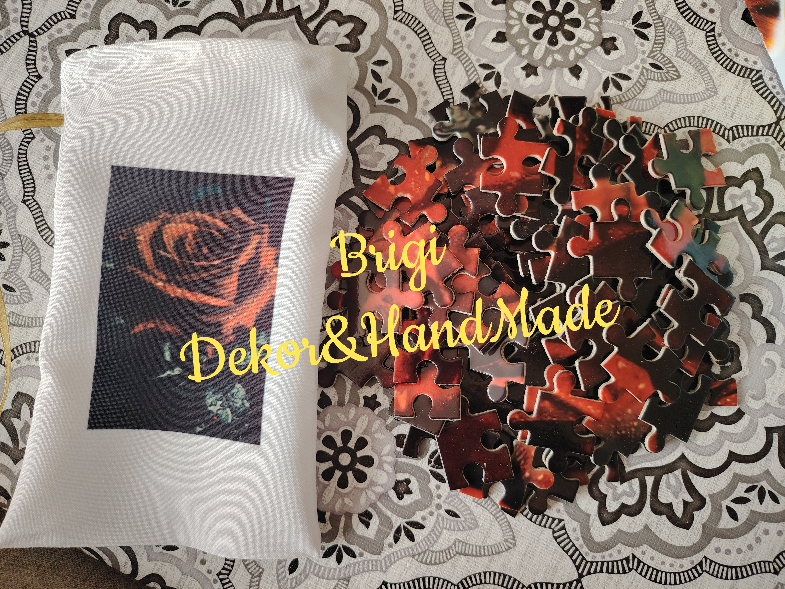
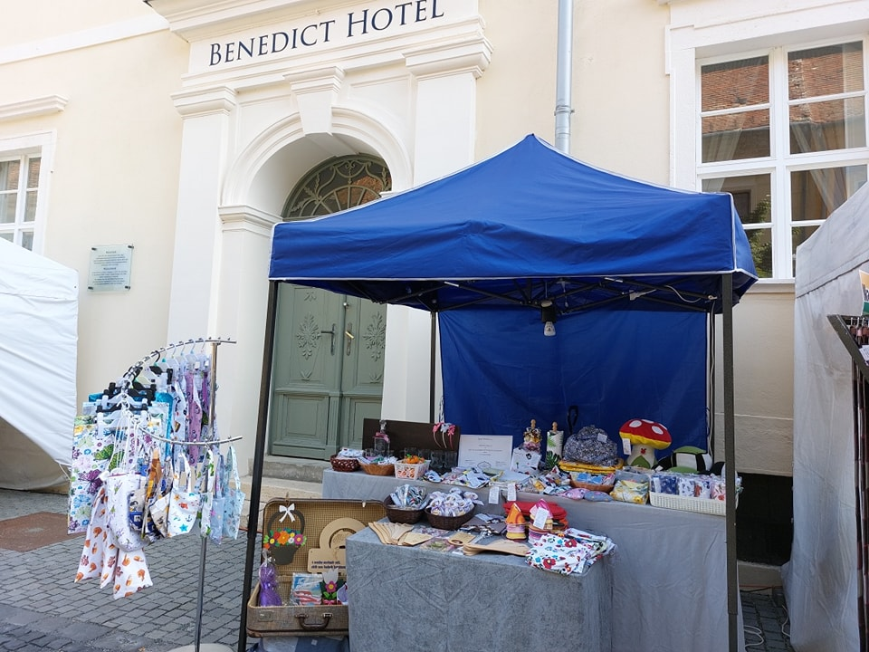

Miért válassza workshopjaimat?Miksi valita työpajani?
A Brigi Dekor&HandMade Műhely egyedülálló lehetőséget kínál mindenkinek, aki szeretné kifejezni kreativitását, élvezni a kézműves foglalkozások örömét, vagy éppen valami különlegeset ajándékozni. A Bük szívében, Vas vármegye egyik legvonzóbb kisvárosában, egy olyan helyet hoztam létre, ahol minden korosztály megtalálja a számára legmegfelelőbb foglalkozást. Brigi Dekor&HandMade -paja tarjoaa ainutlaatuisen mahdollisuuden kaikille, jotka haluavat ilmaista luovuuttaan, nauttia käsityöpajojen ilosta tai antaa jotain erityistä lahjaksi. Bükin sydämessä, Vas-komitaatin viehättävässä pikkukaupungissa, olen luonut paikan, jossa kaikenikäiset löytävät itselleen sopivan työpajan.
Mit nyújtanak workshopjaim?Mitä työpajani tarjoavat?
🎨 Kreatív kézműves foglalkozások: Gyermekek és felnőttek egyaránt részt vehetnek az egyedi programjaimon, ahol az önmegvalósítás és az alkotás öröme kerül előtérbe.Luovat käsityöpajat: Sekä lapset että aikuiset voivat osallistua ainutlaatuisiin ohjelmiin, joissa itsensä toteuttaminen ja luomisen ilo ovat keskiössä.
🧒Gyerekfejlesztés kreatívan: A műhely foglalkozásai segítik a gyerekek finommotorikus képességeinek fejlesztését, és hozzájárulnak kreativitásuk kibontakoztatásához.Luova lasten kehitys: Työpajani auttavat lapsia kehittämään hienomotorisia taitojaan ja edistävät heidän luovuutensa kehittymistä.
👥 Csapatépítő programok: Ideális lehetőség baráti társaságok és munkaközösségek számára, hogy közösen alkothassanak, miközben erősítik a közösségi kötelékeket.Tiimityötä vahvistavat ohjelmat: Täydellinen mahdollisuus ystäväporukoille ja työyhteisöille luoda yhdessä ja vahvistaa yhteisöllisyyttä.
🎟️ Jelenleg elérhető Ajándékutalványok:🎟️ KTällä hetkellä saatavilla olevat lahjakortit
🖌️ Kézműves foglalkozáson való részvételreOsallistuminen käsityöpajaan
🍞 Egyéni kovászos kenyérkészítés adalékmentesenYksilöllinen hapanleivän leivonta ilman lisäaineita
👩🍳 Páros kovászos kenyérkészítés adalékmentesenParihapanleivän leivonta ilman lisäaineita
Lepje meg szeretteit egy kreatív foglalkozással, amely nemcsak élményt, hanem maradandó emlékeket is nyújthat.Yllätä rakkaasi luovalla työpajalla, joka tarjoaa unohtumattomia elämyksiä ja kestäviä muistoja.
Lokális előnyökPaikalliset edut
Workshopjaim könnyen megközelíthetőek Bükfürdő, Sárvár, Szombathely és Kőszeg környékéről. Vas vármegye szépségeivel övezve, műhelyem ideális helyszín mind a helyi lakosok, mind a turisták számára. Työpajani ovat helposti saavutettavissa Bükfürdőstä, Sárvárista, Szombathelystä ja Kőszegistä. Vas-komitaatin kauniissa ympäristössä sijaitseva pajani on ihanteellinen paikka sekä paikallisille asukkaille että turisteille.
Miért különlegesek workshopjaim?Mikä tekee työpajoistani erityisiä?
A Brigi Dekor&HandMade workshopokon a résztvevők nemcsak alkotni tanulnak, hanem egyedi élményekkel gazdagodnak. A foglalkozásokat olyan témák köré építem fel, amelyek érdeklik a résztvevőket – legyen szó szezonális dekorációkról, egyedi ajándékokról vagy személyes alkotásokról. Brigi Dekor&HandMade -työpajoissa osallistujat eivät ainoastaan opi luomaan, vaan saavat myös ainutlaatuisia elämyksiä. Järjestän työpajat aiheiden ympärille, jotka kiinnostavat osallistujia – olipa kyse kausikoristeista, yksilöllisistä lahjoista tai henkilökohtaisista taideteoksista.
Jelentkezz most!Ilmoittaudu nyt!
Ne hagyja ki ezt a különleges lehetőséget! Jelentkezzen már ma, és tapasztalja meg, milyen örömet nyújt egy kreatív foglalkozás. Az aktuális workshopokról érdeklődni lehet a megadott elérhetőségek valamelyikén, illetve a Hírek menüpont alatt mindig fel lesznek töltve az éppen aktuális workshopok. Älä jätä tätä ainutlaatuista tilaisuutta väliin! Ilmoittaudu jo tänään ja koe, millaista iloa luova työpaja voi tarjota. Ajankohtaisista työpajoista voi tiedustella annetuista yhteystiedoista. Lisäksi ne päivitetään aina Ajankohtaista-valikon alle, josta löytyy ajantasainen tieto työpajoista.





🛍️ TermékekTuotteet
A termékek széles skálájával igyekszem kielégíteni a megrendeléseket, illetve az egyéni kéréseknek eleget tenni bármilyen alkalomról is legyen szó.Pyrin täyttämään tilaukset laajalla tuotevalikoimallani ja vastaamaan yksilöllisiin pyyntöihin, olipa kyseessä mikä tahansa tilaisuus.
A termékeimet a következő csoportokba tudnám sorolni, a teljesség igénye nélkül:Tuotteeni voidaan jakaa seuraaviin ryhmiin, ei täydellisyyden vuoksi, mutta esimerkkinä:
Az arcfestés vagy csillámtetoválás egy olyan pontja lehet a rendezvényeknek, amellyel a gyermekeknek kedveskedve nagyobb célközönséget érhet el.Kasvomaalaus tai kimallustatuoinnit voivat olla tapahtuman vetonauloja, joiden avulla voit houkutella laajemman yleisön ilahduttamalla lapsia.
🎭 Mindezzel színesítheti a céges rendezvényt, születésnapot, fesztivált, falunapot.Tämä voi elävöittää yritystapahtumaa, syntymäpäivää, festivaalia tai kyläjuhlaa.
🌍 Kitelepüléses szolgáltatás🌍 Paikan päällä tarjottava palvelu
A szolgáltatás egyes elemei nem csupán személyes találkozást követően érhetőek el, mert a nyomtatás, spirálkötés, laminálás folyamatait követően a kívánt dokumentumokat csomagküldés útján is a rendelkezésre tudom bocsájtani, így bárki számára kényelmesen elérhető ez a szolgáltatás is.Palvelun tietyt osat eivät edellytä henkilökohtaista tapaamista, sillä tulostuksen, kierresidonnan ja laminoinnin jälkeen halutut asiakirjat voidaan toimittaa myös postitse. Näin palvelu on kätevästi saatavilla kaikille.
📦 Csomagküldés elérhető📦 Postitoimitus saatavilla

🚛 KitelepülésekTapahtumavierailut
A kitelepülések egyfajta lehetőséget nyújtanak arra, hogy bemutathassam a munkásságomat, a kézműves foglalkozásokat külső helyszínen is megtarthassam.Tapahtumavierailut tarjoavat mahdollisuuden esitellä työni ja järjestää käsityöpajoja myös ulkoisissa kohteissa.
🎪 Ilyen kitelepülés lehet egy családi nap, egy falunap, egy fesztivál, egy rendezvény vagy bármilyen esemény. Akár oktatási intézmények számára is elérhető ezen szolgáltatásom.🎪 Tällainen tapahtumavierailu voi olla perhepäivä, kyläjuhla, festivaali, tapahtuma tai mikä tahansa muu tilaisuus. Palveluni on saatavilla myös oppilaitoksille.